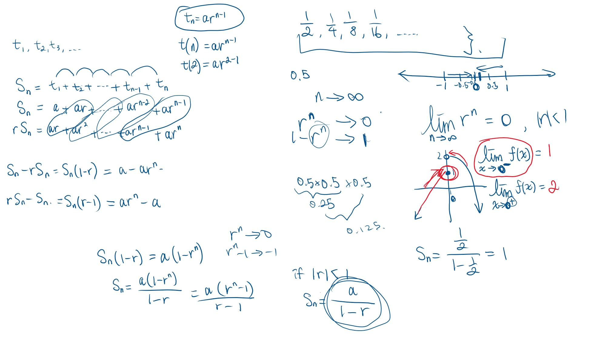
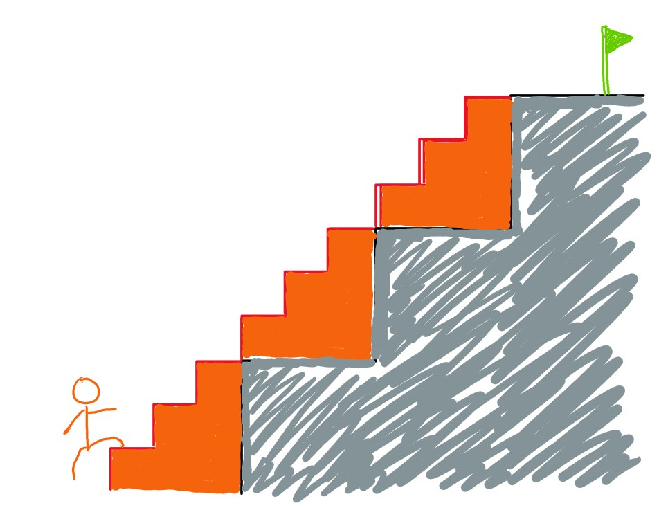

My Journey of Teaching Mathematics
I started teaching math as a volunteer tutor at age 14.
Teaching as a Private Tutor
Since 2017, I have tutored more than 20 students in mathematics. I started private tutoring at age 15, teaching peers older than myself. When I first started my tutoring journey, everything was in-person. I would tutor at local libraries, cafes, and students’ homes. COVID-19 pandemic changed everything from in-person to online. As students got more comfortable with the idea of learning math online, I was able to make the decision to tutor online only. Do I believe in the power of in-person math instruction? I for sure do. However, online math tutoring was a more cost and time effective solution. I used those time and financial resources to develop a home office setting for online teaching and to make use of online software/tools like GeoGebra, Desmos, WolframAlpha, and collaborative whiteboard space.

When I start working with a student, I always ask some questions to get to know them better. It is important that I know what energy each student is bringing into our shared online space. Oftentimes I learn a lot from my students even though I am the one in the teaching role. This is what I love about teaching: every single one of the students challenges my practices differently, and they help me shape my identity, values, and priorities as an educator.
Teaching Students with Learning Challenges
I have been providing free/pay-what-you-can math tutoring for students with additional learning challenges and financial needs. When I am teaching students with additional learning challenges, I always imagine a staircase which is too high and wide for that student to climb up. My role as a teacher here is to subdivide each stair to have mini-stairs that are much easier to climb up.

Teaching at the Centre for Education in Mathematics and Computing (CEMC)
One of my Co-op jobs was a teaching position at CEMC. I worked as a math circles assistant with two other math circles assistants, planning and teaching enrichment math lessons for students in grades 6-8. I still remember my set theory lesson with one of the grade 6 classes. I was explaining what an empty set (a set/collection without any element/member in it), \(\varnothing\), was, and I posed the question, is the set containing the empty set, \(\{\varnothing\}\), empty? One of my students said, “YES, it is empty!” Shortly after, I handed a box, which I purposefully put another empty box inside and sealed, to the student. I asked him to open the box, and as soon as he saw the empty box inside after opening up the original box, he realized that the set containing the empty set was NOT empty. I did not need to explain why.
Teaching as a President of High School Math Club, Mathletes
I served as the president of Mathletes for 2 years. I collaborated with AF, the vice president, to develop a curriculum for each semester, to prepare lesson materials, and to deliver math lessons twice a week - once for grades 9-10 and once for grades 11-12. Our curriculum was largely based on the CEMC materials on their website since most of the contests we wrote were created/organized by CEMC. Since I was only a high school student back then, I definitely did not know much about lesson planning or teaching. What I knew was that I wanted to have a space to transfer my knowledge and passion for math to my peers.